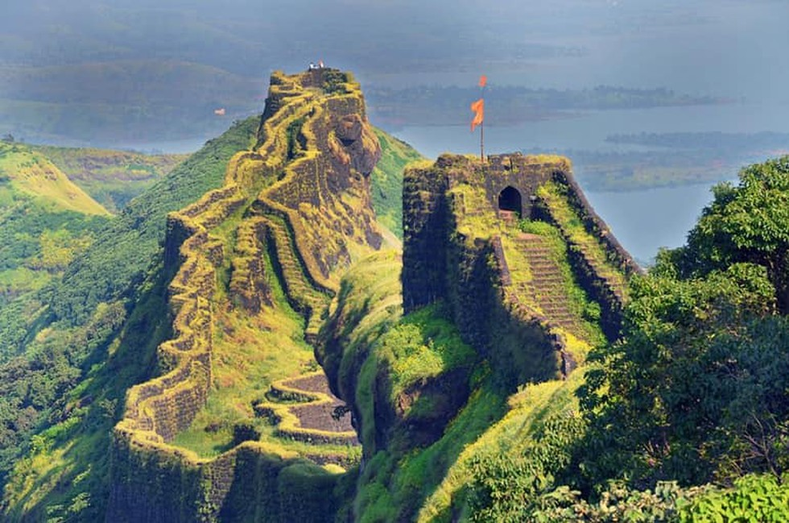

Rajgad is a Hill region fort situated in the Pune district of Maharashtra, India. Formerly known as Murumbdev, the fort was the first capital of the Maratha Empire under the rule of Chhatrapati Shivaji for almost 26 years, after which the capital was moved to the Raigad Fort. Treasures discovered from an adjacent fort called Torna were used to completely build and fortify the Rajgad Fort.
The Rajgad Fort is located around 60 km (37 mi) to the south-west of Pune and about 15 km (9.3 mi) west of Nasrapur in the Sahyadris range. The fort lies 1,376 m (4,514 ft) above the sea level. The diameter of the base of the fort was about 40 km (25 mi) which made it difficult to lay siege on it, which added to its strategic value.
The fort's ruins consist of palaces, water cisterns, and caves. This fort was built on a hill called Murumbadevi Dongar. Rajgad boasts of the highest number of days stayed by Chhatrapati Shivaji on any fort.